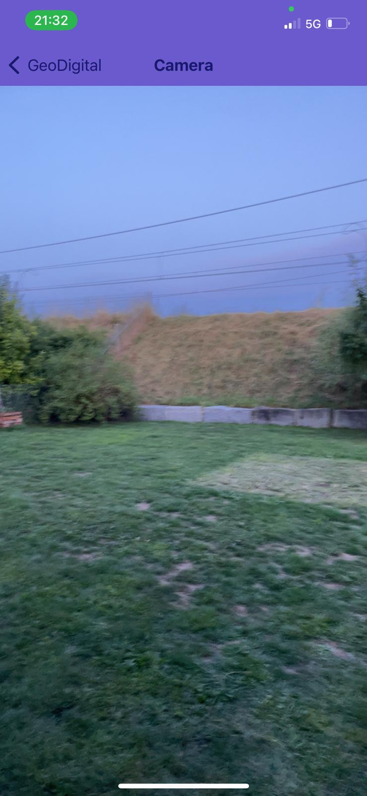

GeoDigital
Find hidden chaches with GeoDigital

GeoDigital: A remake of GeoCache. Find QR-Caches on the interactive map and scann them to view the secret message. See your found caches in the trophy-room!